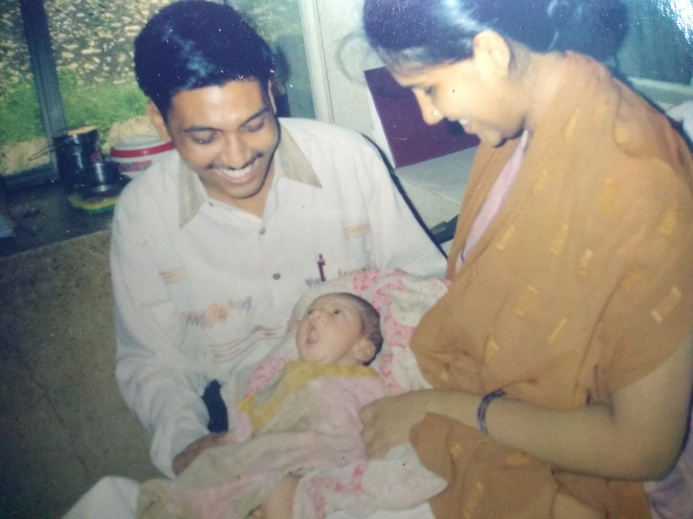
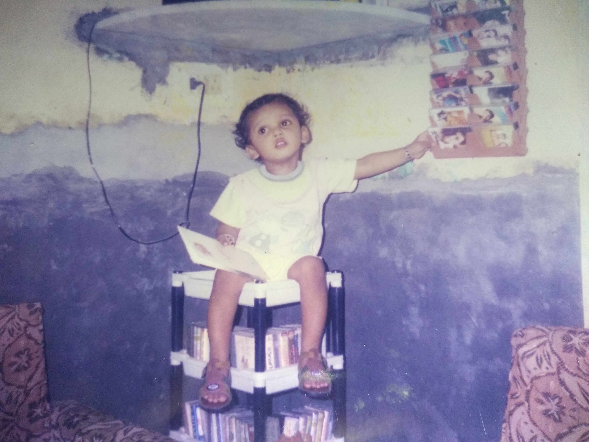
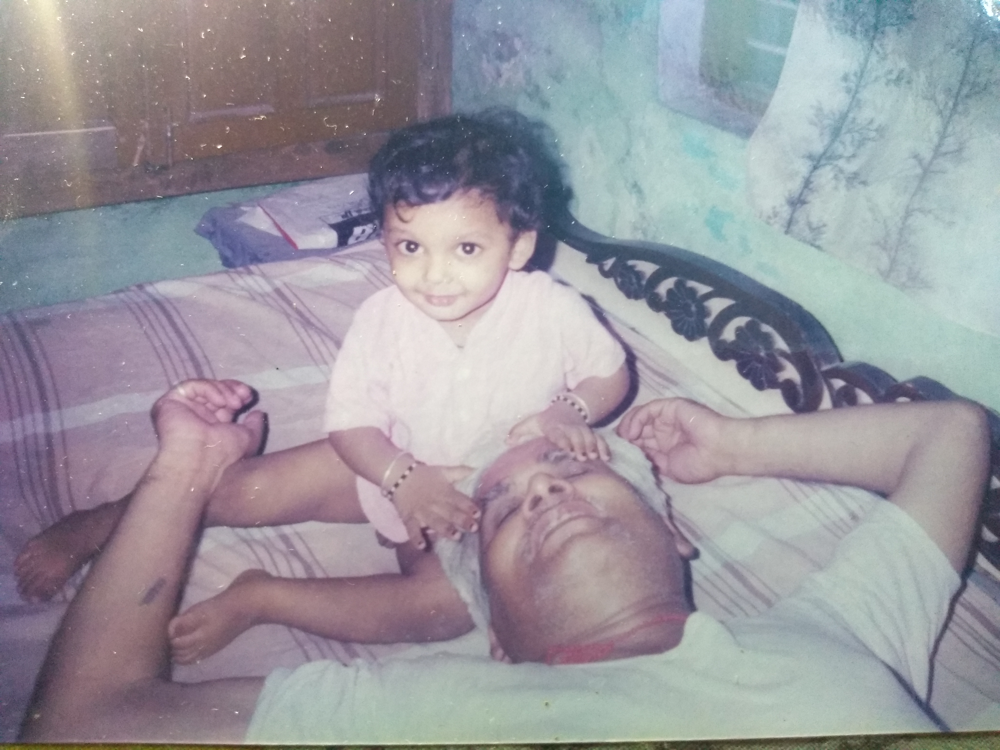
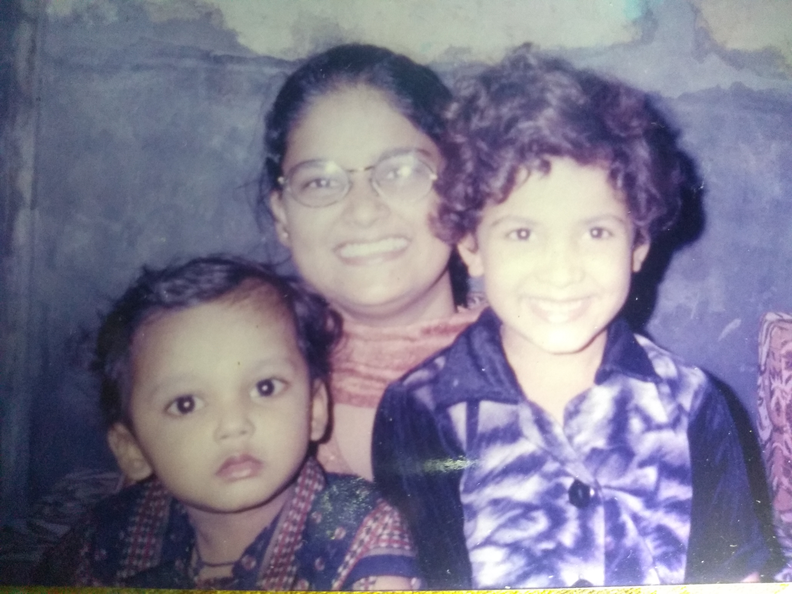
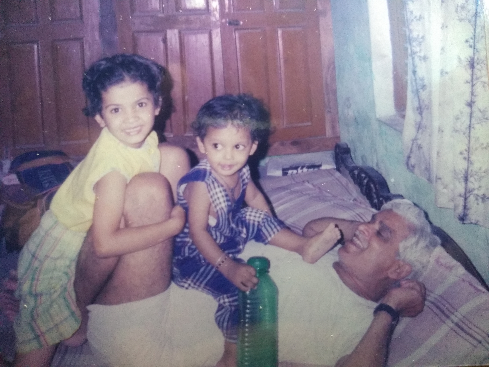

My First Photograph
This was taken by my Mausi in the hospital itself, making it my first ever photograph.
Dont get jealous with my pretty smile...LOL.

My Fondness for Music
Here, you can see I am grabbing a cassette from the shelf. Once a music lover, always a music
Lover.
This picture also credits my Mausi.
My Comfortabe sofa
This picture was taken by my MOM.
The other person you can see here is my Father, who
never fails to comfort me. I Love You PAPA.
The Cutest
The credit for this candid picture goes to my Nani Ji.
She at random bought the camera and
clicked my picture just after I came out of bath.

His favourite head massage
Here you see my best-guide.He is my Nana Ji.
I'm doing his favourite thing that is giving
him a head massage which he enjoys a lot.
May your blessings be with me forever.

My 'Gol' Face
You might also wonder that my face looks a perfect circle in this picture, so am I.
The one with curly hairs is my elder sister. Her name is Kajal Jain.
And the one holding both of us is my Deepu Mausi.

Horse Riding
This was my Favourite thing to do with him...
I always ask him to be a horse for me and I'll ride. That time I became the happiest person on
earth.
Blessings
Last but not the least, this picture was clicked by my MOM in Jain temple in Haridwar while my
grandfather was chanting a Jain Mantra in my ears.
He is no more with us, but I miss him
a lot.
The End